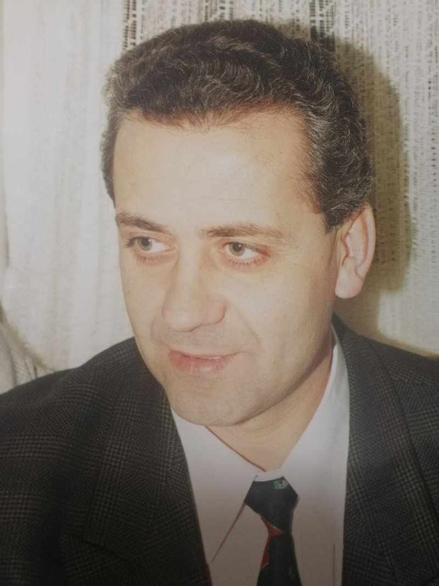

Живко Кулић
Живко Кулић (1954, Врапце, Медвеђа, Србија) је доктор правних наука, универзитетски професор, сатиричар и афористичар. Члан је Удружења књижевника Србије и добитник више књижевних награда и признања.
Афоризме и епиграме пише још од студентских дана. Објављивани су му у бројним листовима и часописима и на Радио Београду. Осим тога, пише и антипословице и сатиричне приче.
Објавио књиге афоризама:
- 1. „Ја сам тај“ (1987, Заједница књижевних клубова Србије, Београд);
- 2. „У кожи свога народа“ (2002, Радничка штампа, Београд);
- 3. „У канџама демократије“ (2009, Алма, Београд);
- 4. „Незаштићени сведок“ (2013, Алма, Београд);
- 5. „Афоризми: избор“ (2013, Алма, Београд);
- 6. „Прекомерна употреба демократије“ (2015, Алма, Београд);
- 7. „Под будним оком демократије“ (2016, Алма, Београд);
- 8. „Јуначење из мишије рупе“ (2018, Алма, Београд);
- 9. „У оковима демократије“ (2019, Алма, Београд).
Објавио књиге антипословица:
- 1. „Није шија него врат“ (2020, Алма, Београд);
- 2. „Стари бисери у новом руху“ (2020, Алма, Београд).
Објавио сатиричне приче:
- 1. „SCI листа“ (2016, Носорог, Бања Лука);
- 2. и више других.
Организовао је или суорганизовао бројне књижевне вечери у Културном центру Чукарица, кући Ђуре Јакшића, на Коларцу и другде. Живи и ради у Београду.